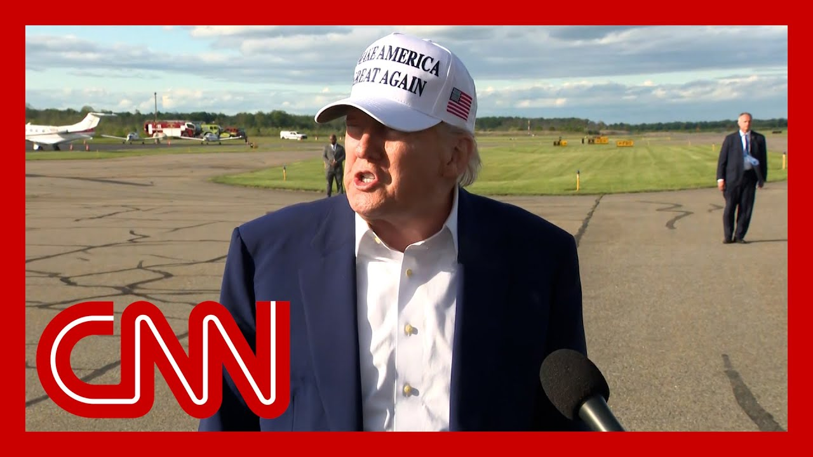

【特朗普将50%欧盟关税推迟至7月9日】
Summary: President Trump postpones the 50% tariff on EU goods to July 9, aiming to prevent further escalation of the trade conflict.
摘要： 特朗普总统暂缓对欧盟商品加征50%关税，新关税将推迟至7月9日实施，以避免贸易战升级。

⏱️ Estimated Reading Time: 17 min
President Trump putting the brakes on a massive 50% tariff that was set to hit goods from the European Union next weekend.
特朗普总统叫停了原定于下周对欧盟商品加征的大规模50%关税。
It threatened to dramatically escalate the trade battle between Trump and European countries.
这一关税原本可能大幅加剧特朗普与欧洲国家之间的贸易战。
Trump now says that the new tariff will be delayed until July 9th.
特朗普现在表示，新关税将推迟至7月9日实施。
CNN's Kevin Liptak is covering the story from the White House.
CNN的凯文·利普塔克正在白宫报道这一事件。
And our Clare Sebastian is in London.
而我们的克莱尔·塞巴斯蒂安在伦敦。
And Kevin, to you first.
凯文，首先请你谈谈。
The president said just a few days ago that he wasn't looking for a deal with Europe.
总统几天前还表示不寻求与欧洲达成协议。
What changed?
是什么改变了这一情况？
Yeah.
是的。
And it seems to have been this conversation that the president held yesterday with the president of the European Commission, Ursula von der Leyen.
这似乎与总统昨天与欧盟委员会主席乌尔苏拉·冯德莱恩的通话有关。
This is actually the first time that the two leaders had talked since President Trump took office, which is somewhat surprising given all of the trade tensions between the U.S. and the European Union.
这是特朗普上任以来两位领导人的首次对话，考虑到美欧之间的贸易紧张局势，这有些出人意料。
And this call, they were essentially able to discuss some of the differences between the two sides as these talks proceed, and there are some significant differences from the European perspective.
在这次通话中，双方讨论了彼此的分歧，而从欧洲的角度来看，这些分歧仍然显著。
There is some confusion about what exactly Trump is looking for in order to lift some of these tariffs.
目前尚不清楚特朗普究竟希望以什么条件来取消部分关税。
U.S. officials have complained that the Europeans aren't bringing them serious enough offers as part of these trade talks.
美国官员抱怨称，欧洲在贸易谈判中未提出足够认真的提议。
And in this call, Ursula von der Leyen essentially told the president that yes, she was serious about reaching a trade deal, but that they would need more time that they would need until July 9th, which is the date that President Trump agreed to.
冯德莱恩在通话中向总统表示，她确实希望达成贸易协议，但需要更多时间，即推迟至7月9日，特朗普同意了这一日期。
We should say that this is actually the original deadline that President Trump set in order to reach all of these trade deals.
值得注意的是，7月9日原本就是特朗普设定的达成所有贸易协议的截止日期。
That is when that 90 day negotiation period with all of these countries will expire.
届时，与这些国家的90天谈判期将结束。
So essentially, the president here saying that he would revert to that original timeline in order to prevent these new tariffs from going into effect.
因此，总统表示将恢复原定时间表，以避免新关税生效。
And Clare, to you, how is the European Union responding?
克莱尔，欧盟方面如何回应？
Well, I think they're treading very carefully.
我认为他们非常谨慎。
Alex, we see that in the conciliatory tone that came out of that call.
亚历克斯，从通话的和解语气可以看出这一点。
I should have underline describing it as a good call, saying Europe is ready to advance talks swiftly and decisively and calling this the most consequential and close trade relationship.
冯德莱恩形容这是一次良好的通话，表示欧洲准备迅速且果断地推进谈判，并称这是最重要且紧密的贸易关系。
I think that's a bit of a shift from the rhetoric we saw from the EU trade chief on Friday, who said that deal should be made with respect and not threats, because now, even though the timeline has been extended, they have 44 days to try and reach a deal with not a 20% reciprocal tariff, but a 50% reciprocal tariff hanging over them.
这与欧盟贸易负责人周五的言论有所不同，当时他表示协议应在尊重而非威胁下达成。而现在，尽管期限延长，他们仍有44天时间谈判，但面临的是50%而非20%的报复性关税威胁。
And I think, as Kevin alluded to, they now have to figure out what exactly to offer the Trump administration to prevent further escalation, because some of the points on the table, these non-tariff barriers that the Trump administration takes issue with, things like value added tax, digital services tax, those are decided at a national level and will be much harder to agree with.
正如凯文提到的，欧洲现在必须明确向特朗普政府提供什么以避免局势升级，因为谈判中的一些非关税壁垒问题（如增值税、数字服务税）由成员国决定，难以达成一致。
Member states.
成员国。
Plus, the negotiating problem that the US side has talked about.
此外，美方提到的谈判难题。
In the words of Treasury Secretary Scott Bessent, The fact that you have these 27 member states in the European Union represented, from sort of centrally in Brussels, has made negotiating more difficult.
正如财政部长斯科特·贝森特所说，欧盟27个成员国由布鲁塞尔集中代表，这使得谈判更加困难。
That also will not be resolved overnight.
这一问题也无法一夜解决。
So perhaps something involving more investment in the US President Trump hinted that if someone wanted to come forward and build a plant, they could look at a further delay, perhaps something to reduce that hated 236 billion trade deficit in goods.
特朗普暗示，如果有企业愿意在美建厂，可能会进一步推迟关税，或采取措施减少2360亿美元的商品贸易逆差。
We don't know at this stage, but the timeline is tight.
目前尚不确定，但时间紧迫。
And while European markets have rebounded somewhat today, I don't think you can call this a full sigh of relief at this point.
尽管欧洲市场今日有所回升，但现在还不能完全松一口气。
Alex and that is what so much of this about what the Trump administration feels like it's being offered in these negotiations.
亚历克斯，这很大程度上取决于特朗普政府认为谈判中得到了什么。
Clare Sebastian in London.
克莱尔·塞巴斯蒂安在伦敦报道。
I'm not looking for a deal.
我不寻求协议。
I mean, we've set the deal.
我们已经设定了条件。
It's at 50% now.
现在是50%关税。
If somebody comes in and wants to build a plant here and can talk to them about a little bit of a delay.
如果有人愿意在这里建厂，我们可以讨论稍微推迟。
Two days later, a call from the EU Commission president apparently changed all that.
两天后，欧盟委员会主席的通话显然改变了一切。
And she asked for an extension in the June 1st date, and she said she wants to get down to serious negotiation.
她要求将6月1日的期限延长，并表示希望认真谈判。
July 9th would be the date.
7月9日将是新的期限。
That was the date she requested.
这是她要求的日期。
Could we move it from June 1st to July 9th?
能否从6月1日推迟至7月9日？
And I agreed to do that.
我同意了。
Joining me now in the group chat, Stephen Collinsson, CNN politics senior reporter, Maria Cardona, CNN political commentator and Democratic strategist.
现在加入群聊的是CNN政治高级记者斯蒂芬·科林森、CNN政治评论员兼民主党策略师玛丽亚·卡多纳。
And Lindsey Drath, CEO of the Forward Party and a former campaign finance official for Mitt Romney's presidential campaign.
以及前进党CEO、米特·罗姆尼总统竞选前财务官员林赛·德拉思。
Thank you guys all for being here today.
感谢大家今天参与。
Thanks for that.
谢谢。
Okay, Stephen, so you've talked in the past about the tariffs in general.
好的，斯蒂芬，你过去曾讨论过关税问题。
When you look at the state of play, are these reversals, are these the art of the deal is the EU doing better than other countries.
从当前局势看，这些反复是“交易的艺术”吗？欧盟是否比其他国家做得更好？
You know what I mean.
你明白我的意思。
It feels like there are some European leaders that have won his favor.
似乎有些欧洲领导人赢得了他的好感。
What are you looking at now?
你现在怎么看？
I think there's really total confusion.
我认为完全是一片混乱。
the I've got.
我有。
My ten questions now.
我现在有十个问题。
But I Know, obviously I have a firm Grasp.
但显然我有一个坚定的把握。
This is the art of the deal founders and the fact there hasn't really been any deals yet.
这是“交易的艺术”的体现，但事实上尚未达成任何协议。
There have been discussions about deals or commitments about deals or a commitment to China to talk about a deal.
有过关于协议的讨论或承诺，或与中国讨论协议的承诺。
but I think there are increasing, concerns about how real all of this is.
但我认为越来越多人担忧这些谈判的真实性。
ultimately, I think what Trump would like is a tariff of 10%.
最终，我认为特朗普希望的是10%的关税。
I think that's what we've seen on, most of the deals that have emerged.
这是我们看到的大多数协议的趋势。
The problem is it's backwards and forwards.
问题是反复无常。
And I think the thing that a European leader probably would take away from the Chinese, example, for example, is when the pain is about to kick in, the president steps back, and that seems to be what's happened here.
我认为欧洲领导人从中国的例子中可能学到的是，当痛苦即将来临时，总统会后退一步，这似乎就是现在的情况。
All right.
好的。
I have to play a clip of tape from the president, because so much of this conversation has been wrapped around the idea of bringing manufacturing back to the U.S..
我必须播放总统的一段录音，因为这次讨论很大程度上围绕将制造业带回美国的想法。
What would that look like?
这会是什么样子？
What would that mean?
这意味着什么？
How long would it take?
需要多长时间？
He was asked about it, and here's what he had to say.
有人问他这个问题，以下是他的回答。
We want to make military equipment.
我们希望制造军事装备。
We want to make big things.
我们希望制造大型产品。
do the AI thing with the computers and the, many, many, many, many elements.
在计算机和许多领域发展人工智能。
But the textile, you know, I'm not looking to make T-shirts, to be honest.
但说实话，我不打算制造T恤。
I'm not looking to make socks.
我不打算制造袜子。
We could do that very well in other locations.
我们可以在其他地方做得很好。
Okay.
好的。
it's a tie for Lindsey and Maria on facial expressions.
林赛和玛丽亚的表情都很精彩。
Well, that was plain.
这很直白。
Lindsey, let me start with you.
林赛，从你开始。
What?
什么？
I mean, that's ambitious.
这很雄心勃勃。
And I think that has always driven the U.S. protection of its manufacturing capabilities, military equipment being competitive.
我认为这一直推动着美国保护其制造业能力，尤其是军事装备的竞争力。
What's what's going on with what he's saying?
他的这番话是什么意思？
Yeah, it is ambitious.
是的，这很有野心。
the American people want to hear that the president is committed to bringing manufacturing jobs, because the American people equate that with middle income jobs.
美国人民希望听到总统致力于带回制造业岗位，因为他们将其等同于中产阶级工作。
So middle class job creation equals manufacturing.
因此，创造中产阶级就业机会等于制造业。
Unfortunately, it's not realistic, as most of us know, the time horizons to build out the infrastructure to create these manufacturing facilities is not something that's going to happen, certainly not during this time.
但不幸的是，这并不现实，我们都知道，建设这些制造设施的基础设施需要时间，短期内无法实现。
But if you want to launch a golden age, then this is what you do.
但如果你想开启一个黄金时代，这就是你要做的。
No.
不。
I'm serious.
我是认真的。
It's like you just you have to decide at some point.
就像你必须在某个时刻做出决定。
Ray, it was like building the highway system.
就像建设高速公路系统。
It didn't happen overnight.
这不是一夜之间完成的。
Yeah, but you also have to base.
是的，但你也必须基于。
It on reality and on history and on the knowledge of what the United States is capable of, and what other countries are there to do for the United States in terms of trade, this is nothing but chaotic, discombobulated craziness and confusion.
现实、历史以及美国的能力和其他国家在贸易中的角色，这完全是一片混乱和疯狂。
And we're seeing it in what, not just the tariffs are doing to consumers, but what this back and forth is doing to the markets.
我们不仅看到关税对消费者的影响，还看到这种反复对市场的冲击。
And you all have done CNN has done such a great job, and I'm so proud of the network of focusing on real people's stories.
CNN做得非常出色，我为我们关注普通人故事的努力感到自豪。
You you all have on all the time small businesses, entrepreneurs, people who are, frankly, would be the ones who would benefit if this kind of manufacturing would actually come back to the United States.
你们一直在报道小企业、创业者，这些人实际上会因制造业回归美国而受益。
But are experiencing the pain right now.
但他们现在正承受痛苦。
So just to your point about other countries saying, well, let's just maybe put them through it, it's a problem.
正如你提到的其他国家可能认为“让他们经历一下”，这是一个问题。
Independent pharmacies are now warning they could become a casualty of President Trump's trade war.
独立药房警告称，它们可能成为特朗普贸易战的牺牲品。
The president has threatened to put steep tariffs on imported pharmacy articles.
总统威胁对进口药品征收高额关税。
This is part of his attempt to bring drug production Small pharmacy.
这是他试图将药品生产带回美国的一部分。
So obviously the cost of those tariffs could actually drive them out of business.
显然，这些关税的成本可能迫使它们倒闭。
CNN's Julia Vargas Jones takes a closer look.
CNN的朱莉娅·瓦尔加斯·琼斯进行了深入调查。
There's not a single bottle that I pull up here that doesn't say Made in China or made in India.
我拿起的每一瓶药都标有“中国制造”或“印度制造”。
The generics, I think probably about 80% of it or more is, made in other countries.
仿制药大约80%或更多是在其他国家生产的。
The threat of tariffs for this slice of the health care industry looms large, but it's just one of many challenges independent pharmacists like Sona Kazangian now face.
关税威胁对医疗行业的这一部分影响巨大，但这只是像索娜·卡赞吉安这样的独立药剂师面临的众多挑战之一。
It's very difficult for us to survive.
我们很难生存下去。
Her father started the business 41 years ago.
她的父亲41年前创立了这家药店。
Now she's fighting to keep it open among razor thin profit margins in what she calls a broken reimbursement system.
现在，她在一个利润微薄且报销系统不健全的环境中努力维持经营。
There are drugs that I don't even buy anymore, because I already know that there is no plan that reimburses me even at costs, much less out of profit.
有些药我甚至不再进货，因为我知道没有保险计划会按成本报销，更不用说利润了。
That reimbursement is set by pharmacy benefit managers or PBMs, companies that act as middlemen between insurers and pharmacies.
报销金额由药房福利管理者（PBM）设定，这些公司是保险公司和药房之间的中间商。
They control, you know, what the patient pays is a copay.
他们控制患者的自付费用。
They control what we, as the pharmacy receives as payment.
他们控制药房收到的付款。
These entities are paying us less than what the drug costs for us to buy it.
这些机构支付的金额低于我们购买药品的成本。
This business model is not sustainable for the pharmacies, experts say, but often more profitable for PBMs.
专家表示，这种商业模式对药房不可持续，但对PBM更有利可图。
PBMs are paid by the discount they get.
PBM的报酬来自他们获得的折扣。
So they've.
因此他们。
Learned that if prices rise, they get a better discount and their pay goes.
发现如果价格上涨，他们会获得更大折扣，收入也会增加。
Up.
上升。
So Batavia benefit from higher prices of medication.
因此，药品价格上涨对PBM有利。
If the prices rise because of tariffs or for any other reason, they will do better.
如果因关税或其他原因导致药品价格上涨，PBM将受益更多。
If enacted, the cost of tariffs on those drugs would be passed down from manufacturer to wholesaler to pharmacy, squeezing these businesses even further.
如果实施，药品关税的成本将从制造商传递到批发商再到药房，进一步挤压这些企业。
We don't really know exactly what's going to happen, but I think all independent pharmacies have thought about this issue.
我们并不确切知道会发生什么，但所有独立药房都在考虑这个问题。
If you're acquiring this drug now for X dollars more because of a tariff, the likelihood that the PBM is going to pay me extra dollars more to make up for that is probably slim.
如果你因关税而多支付X美元购买药品，PBM额外补偿的可能性很小。